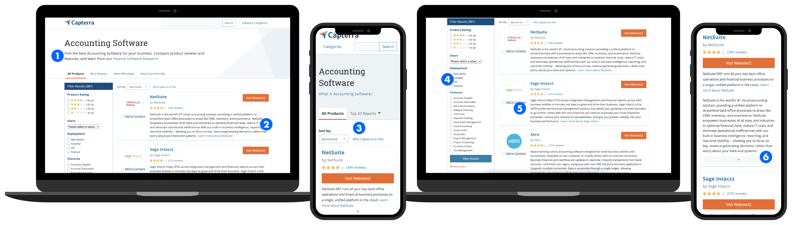
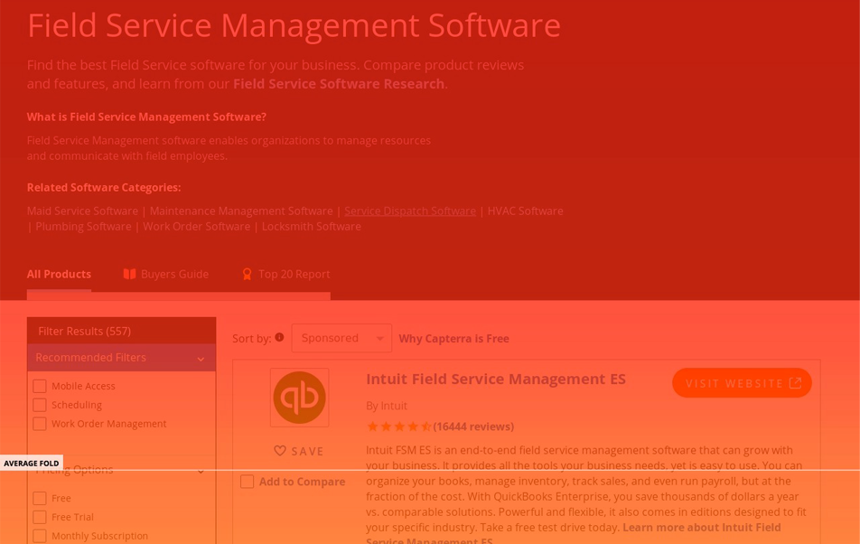
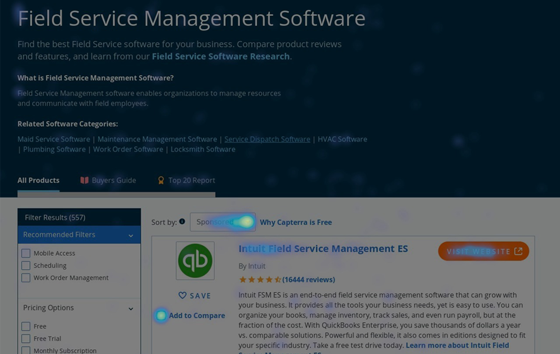
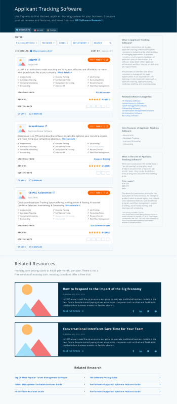
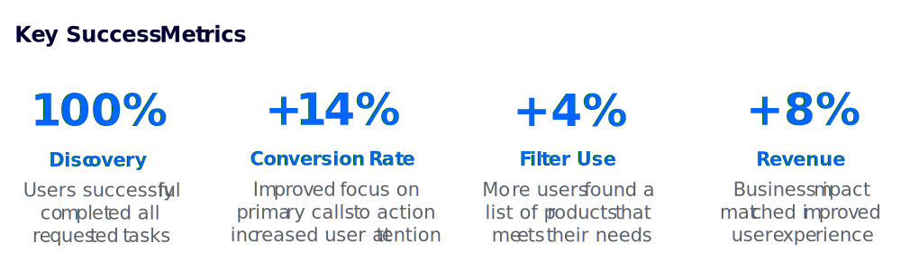

Product Page Directory
Capterra is comprised of 850+ software directores to help users find the solutions they need. I redesigned Capterra's directories to prioritize user needs.
TLDR: Redesigned Capterra's directory page to improve UX and CRO. I tested and redesigned the filter, the editorial content, the product detail cards, and more.
- Role: Lead UI Designer
- Software Used: Figma, Illustrator, Optimize, Hotjar
- +14% conversion rate
- 100% of users succesfully discovered new content
- +8% revenue
The Problem
Directories are Capterra's primary revenue generating pages. Any UX or UI improvement could in no way negatively affect conversions, or there would be major business repercussions.

Changes to Google’s algorithm have eaten into quality traffic and begun a steady decline in conversions on Capterra's directory pages. Leadership charged me with getting conversion rates back to, or above, where they were before the algorithm changes.
Problems include:
1
Very little editorial and explanatory content to help orient the user to the directory, and Capterra in general
2
Large blocks of product marketing jargon that were difficult to skim and frustrating to parse
3
Filters and editorial content not accessible by mobile users
4
Desktop filters didn't highlight all available data, and were an ineffecient use of space
5
Compare feature difficult to find, and not accessible by mobile users
6
Mobile view didn't have parity with desktop view causing performance issues
Research Findings
After cataloging design and product issues with the template, I performed A/B testing, unmoderated usability testing, moderated interviews, and heatmapping to better understand our users' issues with the Directory.
Users wanted to be able to filter with pricing and features data.
Users were frustrated that the page reloaded in order to apply their filters.
Users were bouncing after looking at 1-2 product cards.
Card information was unhelpful and overwhelming.
Users landed on the wrong directory wihout a clear path forward.
Competitors offered more features like saving and editorial content.
Users relied on experts to help them choose between 2 frontrunners.
Users didn't trust the products listed because there was so little information.
Users performed the CTRL+F function to check on specific products.


Hypothesis #1
"We believe that improving the visibility and coverage of the filter will encourage engagement and help users find the best products for thier business needs faster and easier.”
1
Test: Move the filter to the top, include pricing info, add content to right column
Adjusting the layout of this page creates more space for valuable editorial content and new filter facets while prioritizing the visibility of the filter.
2
Test: Allow users to filter by searching for product and vendor names
Users are able to find specific products they want to know more about, and verify that Capterra is a legitimate service that lists brand name products.
Hypothesis #2
"I believe that adding more data to the product cards will allow users to make a more informed product choice which will decrease bounce rate and increase conversion rate.”
1
Test: Place additional features and product info behind an expandable link
Create a card that's easier to skim by listing data points in a row, and hiding long-form content like marketing jargon and features behind an expandable link.
2
Test: Surface even more product data behind tabs within the card
In an effort to protect conversion rates and pacify stakeholders, I tested a variant that keeps pricing information behind a tabbed view.
The Solution
I designed a template that gives users more information at a glance, and more opportunities to customize their view. It encourages users to spend more time on Capterra and to return throughout their buying process.

After analysing the tests, we combined the most successful results into the winning design. In addition to the layout and feature changes, I rolled out the new design system to this template.
We rebuilt the page in a new tech stack to implement Elastic Search and improve speed performance
The product cards now provide users with much needed data like pricing, screenshots, and features
Business needs are fulfulled by maintaining long product descriptions and a focus on the primary revenue CTA
The design is fully responsive so that mobile and desktop have parity for improved page performance
There is a much larger area dedicated to editorial content that helps orient the user and improve SEO
The filter includes additional data points, and is accessible on both desktop and mobile
Tabbed product cards allow for additional data without lengthening the page exponentially
Key Learnings & Next Steps
Over the course of many rounds of iteration, we have seen massive improvements in UX metrics on this template. Users, and the business, benefit when users are able to better find the products they need.

Because this template continues to be a main driver for revenue, it will need further iteration and testing. Coordinating with SEO on upcoming changes to the Google algorithm will be important to ensuring continued success for the template.
Next steps include:
1
Roll out additional editorial and way-finding content to right column
2
Test product card tab optimizations to find the most inticing content for users
3
Expose more filter options like reviews and vendor responses
4
Improve the visual hierarchy of the filter to encourage engagement
5
Introduce more card "breaks" to highlight Capterra initiatives
Next Case Study 
Software Product Profile
Previous Case Study
Hackathon: Podcast App
Developed with Love by Amelia Peacock 2020